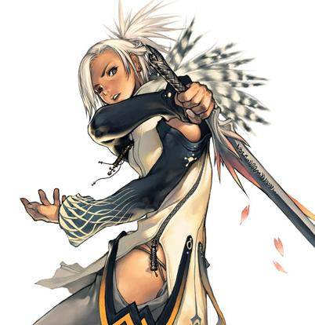

Forums galactiques > Taverne galactique : lieu de discussion informel > Armurerie: Les lames vengeuses
| Aruzan Réputation à la taverne : 36  30/06 ETU 20:15 | Score : 0 Détails Bienvenue ici vous pouvez vous amusez à vous battre, à tirer avec vos revolver, à vous battre à l'ame blanche aussi .
Gratuit les trois premiers jours . | ||
| A Réputation à la taverne : 176  30/06 ETU 20:39 | Score : 0 Détails mmmm ... votre armurerie est intéressante mais, pour notre part, nous allons d' abord écraser Sieur d'Ultssinn de Maa'Xhan, comte d'Arda, représentant de Kahndann lors d' un combat à mort dans une autre salle de la taverne.
Si cela n' était pas le cas (ce que nous doutons fort) nous reviendrons sans doute ici ... | ||
| Aruzan Réputation à la taverne : 36 30/06 ETU 20:57 | Score : 0 Détails Cette armurerie vous permet de testez les armes que vous acheté .
Ne vous génez pas servez vous ! *Prenant une hache * | ||
| Sigma Réputation à la taverne : 197  01/07 ETU 10:54 | Score : 0 Détails SigMa entra dans la salle
"enfin une salle ou l'on peut s'amuser" Il sortit d'une besace une bouteille d'hydromel et en ingurjita une bonne lampée. Il dégaina ensuite son épée, et se précipita sur Tajima: "Par le marteau de Thor, Je répandrai tes entrailles sur le sol" Il lui ascéna un coup à la carotide... | ||
| Calintz Réputation à la taverne : -2  01/07 ETU 11:29 | Score : 0 Détails Calintz arriva a son tour dans la salle
Eh bien messieus, arreté donc de vou battre pour un rien! Il déguéna son épée puis esseya de la tester sur quelques pantins qui trainait dans le coin. Pas très solide tou ca Aruzan, tu aurai pas d'autres pantin en adamantium cette foi ci? | ||
| Sigma Réputation à la taverne : 197 01/07 ETU 11:40 | Score : 0 Détails On se bat pas pour rien, mais pour le plaisir.Ah!AH!Ah!
"Votre sang sera répandu sur ce plancher, pour l'honneur et la gloire!! SigMa commenca à fraper tous les occupants de la taverne... | ||
| Sigma Réputation à la taverne : 197 01/07 ETU 11:56 | Score : 0 Détails (oui, c'est là les règles de base du combat oral)
L'arme de tajima arriva sur l'épée de sigma qui tomba à terre juste avant l'impact. Des flammes rouges sortirent de ses yeux, la haine et la colère s'étaient emparés de lui. "Une fois tes membres éparpillié sur le sol, je ferai un collier avec tes doigts. Pour l'honneur...et la gloire!" Il dégainna une hache de bataille (qu'il sortit de sa manche) et se jeta à nouveau sur son ennemi en ascennant un coup vertical, destiné à le couper en deux. | ||
| Sigma Réputation à la taverne : 197 01/07 ETU 12:15 | Score : 0 Détails Après deux heures de combats, SigMa posa son arme à terre... Il regarda les multiples blessures qu'il avait subit et esquissa un sourrire à son adversaire...
| ||
| Sigma Réputation à la taverne : 197 01/07 ETU 12:37 | Score : 0 Détails Ouaip!
Ce fût un beau combat. Quoique ta tentative de meurtre au pistolet t'ai fait baisser dans mon estime...un tel manque de loyauté et d'honneur ne te vaudra pas d'entrer au vahlalha... Celà ne remet pas en cause tes capacités à te battre. | ||
| elisabeth bathory Réputation à la taverne : 102  01/07 ETU 16:32  | Score : 0 Détails Elisabeth entra dans la pièce, celle-ci était spacieuse mais faiblement éclairée ce qui donnat à la comptesse l'impression de rentrer chez elle dans son modeste chateau glauque et sinistre.
Elle s'aprocha du comptoir et demanda: "Quelles armes me proposez vous? Je voudrais celle qui me ressemble le plus, lègere, féminine,facile à manier... Je voudrais aussi qu'elle soit classique, je ne suporte pas les armes à feu. Je sait néanmoins aprécier la noblesse des katanas et autres sabres forgés par des maitres forgerons. Si possible je voudrais qu'elle inflige une mort lente et douloureuse, j'aime tant regarder mes victimes soufrir dans l'atente de leurs dernier souffle. Enfin je trouve qu'il y a toute une poésie dans les lames jumelles, tellement de noblesse de danger, que je sorais en faire un receuil de funestes poesies guerrieres. En prononçant ces mots, la comtesse avait sourit, on sentait dans ces yeux toute l'afection qu'elle portait a ces lames d' acier froid et tranchante sur les quelles elle se complaisait a faire de longues descriptions. "Au fait je suis désolée d'étre si difficile mais c'est ma nature profonde qui s'exprime en ces mots." | ||
| Aruzan Réputation à la taverne : 36 01/07 ETU 17:48 | Score : 0 Détails *Aruzan apporta à la comtesse une rapière solide et magnifiquement faite, fine, rapide et puissante*
Cela vous convine t'il comtesse ? *Il se tourna vers Tajima en sortant tout une caisse d'armes * Si tu veux te battre ce n'est pas un problème ! | ||
| elisabeth bathory Réputation à la taverne : 102 01/07 ETU 17:52 | Score : 0 Détails je vais rajouter cette arme a ma collection merci et je vais m'assoir pour regarder votre combat.
| ||
| Aruzan Réputation à la taverne : 36 01/07 ETU 17:54 | Score : 0 Détails Admirer ma puissance comtesse mon sang d'Immortel bouillonne en moi !
*des flammes vertes entourèrent Aruzan dés qu'il eu prononcé ces paroles * | ||
| Aruzan Réputation à la taverne : 36 01/07 ETU 18:04 | Score : 0 Détails *Avec une souplesse incroyable Aruzan esquiva et envoya un coup de pied pour frapper sa tempe droite*
| ||
| elisabeth bathory Réputation à la taverne : 102 01/07 ETU 18:05 | Score : 0 Détails Je regarde et j'admire votre assurance pour pimenter un petit peu l'exercice j' inviterais personellement le gagnant à passer une journée sur ma plannete mère en ma compagnie ou en celle d'une bande de jeunes filles magnifiques. Au choix.
| ||
| Aruzan Réputation à la taverne : 36 01/07 ETU 18:09 | Score : 0 Détails Pour moi ce sera en votre compagnie comtesse vous ètes si géniale.
*son coup de pied était en fait une feinte pour placer un coup de hache visant à lui trancher les jambes* | ||
| Aruzan Réputation à la taverne : 36 01/07 ETU 18:13 | Score : 0 Détails *aruzan prit son épée nommée "Lune bleu" pour le trancher en deux avec une vitesse inouï*
| ||
| Aruzan Réputation à la taverne : 36 01/07 ETU 18:16 | Score : 0 Détails *Aruzan utilisa son don pour réssucitée Tajima avec succé*
Tajima tu ne peu mourir ici ! Notre combat ne peu se terminé ainsi ! | ||
| Aruzan Réputation à la taverne : 36 01/07 ETU 18:19 | Score : 0 Détails (Non tu peu pas faire mourir ton persos comme ça c'est trop facile)
| ||
| Aruzan Réputation à la taverne : 36 01/07 ETU 18:22 | Score : 0 Détails (Tu n'est pas drole fait en sorte de revenir je sais pas en Immortel par exemple )
|
Forums galactiques > Taverne galactique : lieu de discussion informel > Armurerie: Les lames vengeuses